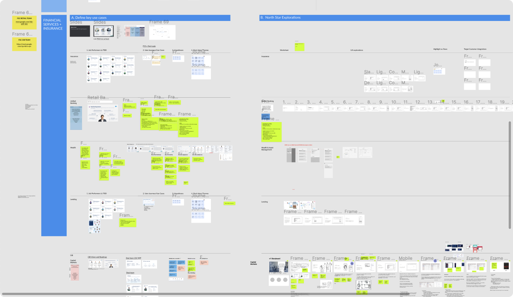
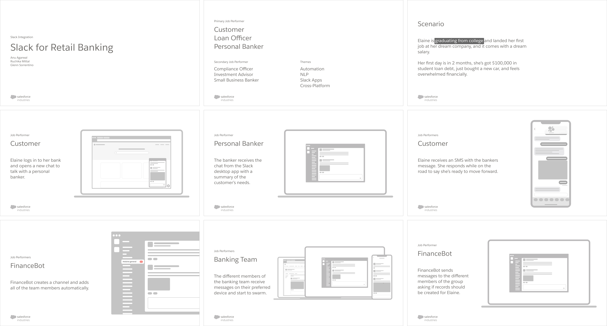
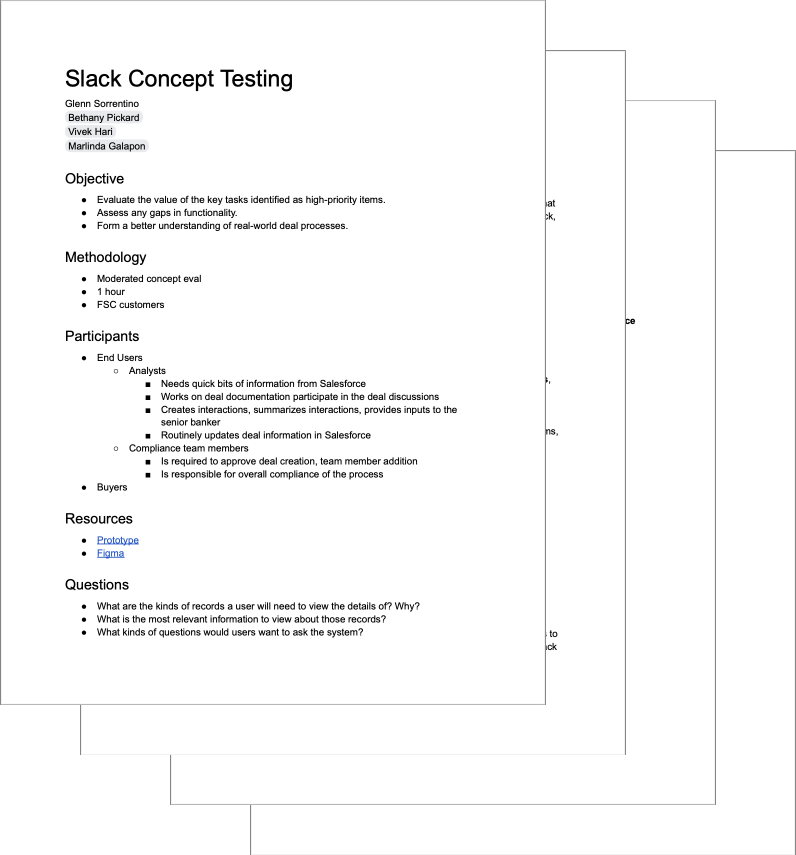
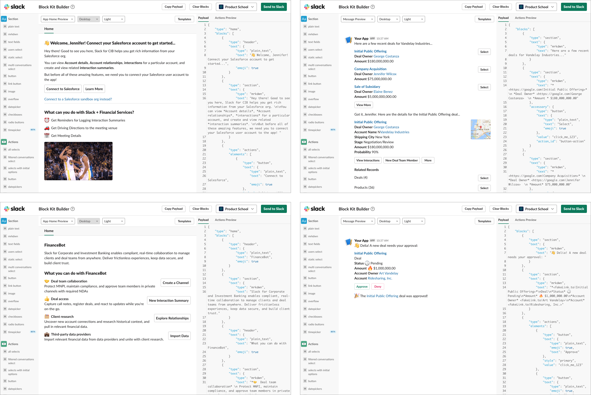
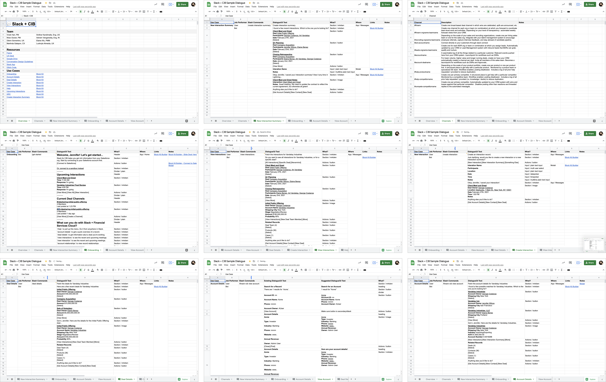
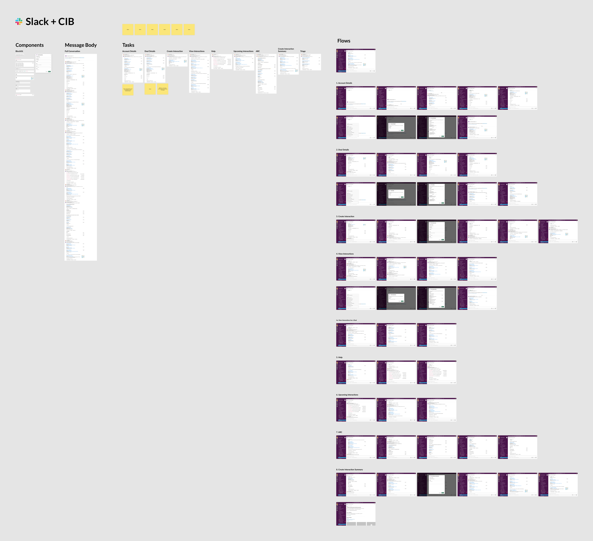
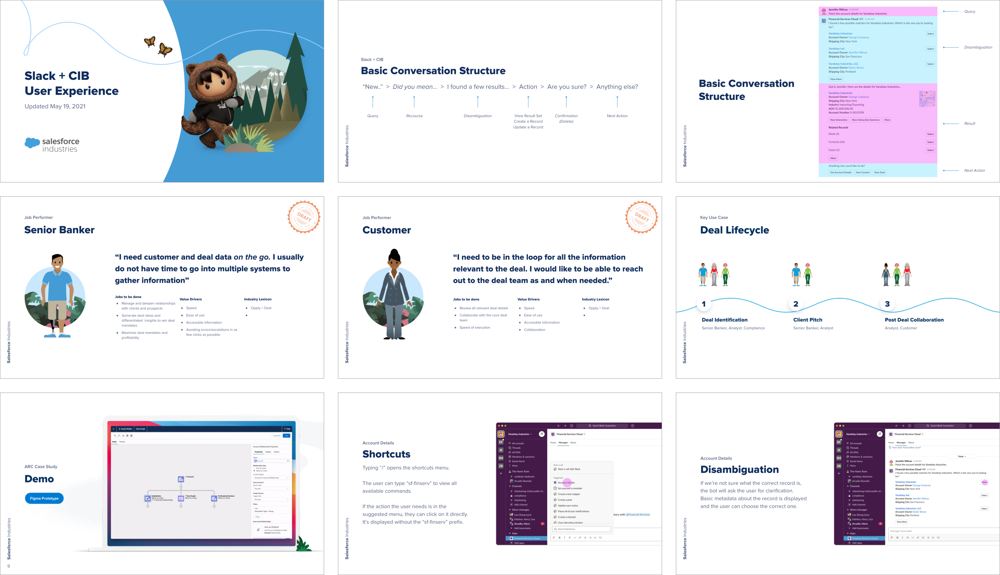
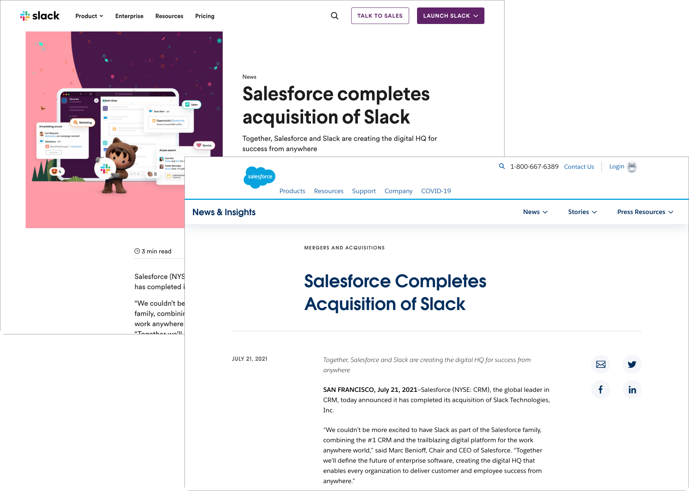

Overview
Financial Services is an industry that has many stakeholders and long and complex deal lifecycles. Slack for Investment Banking gives customers easy access to their Salesforce data, makes it easy to collaborate with members of the team, and provides industry insights that help teams stay on top of their deals.
The Problem
Investment Banking deal teams are complex and must comply with regulatory requirements that can cause timelines to slow and carry harsh penalties if done incorrectly. Disparate systems act as barriers to collaboration, slowing progress further.
Constraints
Timeline
- The initial timeline was rapid-fire
- Had to present plan without opportunities to validate with customers
- No dedicated user researcher
- Couldn’t show any designs, prototypes, or even talk about the work to customers pre-close
- Had to create a more high level set of interview questions covering collaboration and working styles
Dependencies
- Waiting on UISF team to deliver functionality for in-message interactions
- Most functionalities needed to be built from scratch, delaying our time-to-deliver
Kickoff
This was one of the most anticipated projects of recent memory at Salesforce, with almost everyone on the team asking to get involved. To get the whole team involved, we kicked off the effort with a cross-functional, international remote design studio using Figma. Our participants included product managers, designers, researchers, and engineers in the US and India.
We thought through use cases across finance verticals, and created storyboards showing how Slack could augment those experiences.
Company Presentation
About a week after the kickoff workshop teams were asked to present our best use cases to our company executive leadership. We focused on Investment Banking and created a story about how Slack could help deal teams work better. A problem bankers face is information being spread across multiple systems, not taking advantage of automation and huge regulatory finds from incorrect filings. We explored concepts around taking voice notes, automation embedded into workflows, how compliance can be baked in, and using Slack as a hub for all of your federated data.

Research
Messaging was a new problem space for many people at the company, so the first thing we did after getting our feet wet was to learn as much as we could about Slack and how our customers consumed messaging apps. The acquisition closed in July, but the work kicked off in February. The timing introduced unique challenges: we weren’t allowed to talk to customers about Slack and we couldn’t show any design concepts for what we were thinking about. We created a set of interview questions that surrounded team collaboration and working style. Our goals were to understand how our customer’s teams collaborated today, what they liked about their current platforms, what could be improved. Following every few rounds of interviews, we’d refine the designs further in time for our next company presentation.
Design
Block Kit
Before the acquisition closed, we couldn’t communicate with the Slack UX team, and had to start from scratch. Luckily Slack has its Block Kit Builder, which allows users to play with the available components, or blocks, in a demo environment.
I started modeling our use cases in the builder to learn the system and used the output as my guide when creating Figma components. The JSON that the builder provided ended up being a key part of the design spec and was used as a guide for our engineering team.
Conversational Design
One recent project was the Einstein Voice Assistant, a conversational way to create, read, and update your data in Salesforce. We used sample dialogs to design the conversational experience, and I brought that practice to the Slack effort by creating a spreadsheet documenting our key flows and their conversational designs.
The information documented included the job performer, the slash command to instantiate the flow, the dialogue, the type of block kit component, where the interaction happened, and links to the Block Kit JSON from the buidler.
Prototyping
With the spreadsheet as our source of truth, and the Block Kit JSON showing us the expected interface, I translated the UI into Figma and built a prototype that demonstrated its interactivity. From the prototype, created animated GIFs that were embedded into the design specifications for their respective flows.
Design Spec
With the sample dialogue complete, the conversations modeled in the Block Kit Builder, and prototypes in place, I created a design spec that collated all of the information for our product and engineering teams. It included CX principles, information about the users we were solving for, demos, and detailed interaction specs.
The Deal Closes
The Slack deal closed in mid-July, about 6 months after our work kicked off. This offered the benefit of having time to iterate but was difficult because we couldn’t validate our concepts until our teams were basically committed to building.
Closing
Conversational design is big and is only going to continue growing. As product designers we've primarily had to think about web and mobile interfaces as our primary touchpoints, but Slack's superpower is it's simplicity and integrations. Instead of having to go use clunky enterprise software, you can do take action right from the context of a conversation. Instead of figuring out how to use new software, you can ask the system a question naturally. Most of us have smart speakers in our home, and if not you have one of your phone. We've gone from a GUI-centric ecosystem to one where VUIs and other conversational design are primary touchpoints for the user. I think it's a fun future that we're creating.
Successes
- Fast team response time
- Lean, collaborative team
- Adapted to constraints successfully
- Drawing from past experience
- Called the most interesting set of use cases
Learnings & Reminders
- Lean research methods can work at scale
- Not everyone is comfortable working in Figma
- Spreadsheets are a bridge to collaboration
- Have fun with the story and characters
- You can do a lot with a little